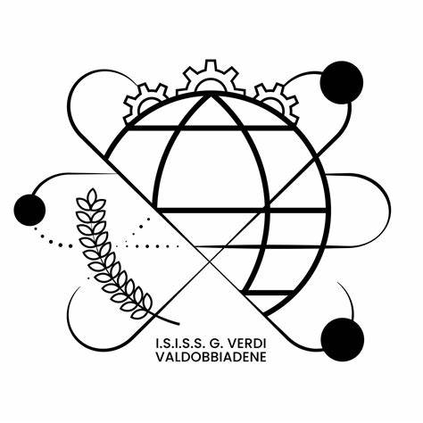

La Guerra dei Trent'anni (1618–1648) Introduzione La Guerra dei Trent'anni fu uno dei conflitti più devastanti della storia europea, durato dal 1618 al 1648. Iniziata come una guerra religiosa tra cattolici e protestanti nel Sacro Romano Impero, si trasformò progressivamente in una lotta per l'egemonia politica tra le grandi potenze europee, coinvolgendo nazioni come Spagna, Francia, Svezia e Danimarca. Cause principali Religiose: Tensioni tra cattolici e protestanti, aggravate dalla fragile Pace di Augusta del 1555. Politiche: Tentativi degli Asburgo di centralizzare il potere nel Sacro Romano Impero. Economiche e sociali: Crisi agricole, carestie e squilibri economici che alimentarono il malcontento. Le quattro fasi del conflitto Fase boemo-palatina (1618–1625): Scatenata dalla defenestrazione di Praga, vide la sconfitta dei protestanti boemi nella battaglia della Montagna Bianca. Fase danese (1625–1629): Intervento della Danimarca a favore dei protestanti, conclusosi con la vittoria delle forze imperiali. Fase svedese (1630–1635): La Svezia, guidata da Gustavo Adolfo, ottenne iniziali successi ma subì gravi perdite, incluso il re stesso. Fase franco-svedese (1635–1648): La Francia cattolica si alleò con i protestanti per contrastare gli Asburgo, portando a un conflitto su scala continentale.
Conseguenze Politiche: La Pace di Westfalia del 1648 sancì la fine del conflitto, riconoscendo l'indipendenza di Svizzera e Paesi Bassi e limitando il potere degli Asburgo. Religiose: Fu riconosciuta la coesistenza di cattolicesimo, luteranesimo e calvinismo nel Sacro Romano Impero. Demografiche ed economiche: La guerra causò la morte di milioni di persone e devastò l'economia di molte regioni europee. Significato storico La Guerra dei Trent'anni segnò la fine delle grandi guerre di religione in Europa e l'inizio dell'era degli Stati sovrani moderni, basati sul principio della non ingerenza negli affari interni altrui. Le quattro fasi del conflitto Fase boemo-palatina (1618–1625): Scatenata dalla defenestrazione di Praga, vide la sconfitta dei protestanti boemi nella battaglia della Montagna Bianca. Fase danese (1625–1629): Intervento della Danimarca a favore dei protestanti, conclusosi con la vittoria delle forze imperiali. Fase svedese (1630–1635): La Svezia, guidata da Gustavo Adolfo, ottenne iniziali successi ma subì gravi perdite, incluso il re stesso. Fase franco-svedese (1635–1648): La Francia cattolica si alleò con i protestanti per contrastare gli Asburgo, portando a un conflitto su scala continentale.
Conseguenze Politiche: La Pace di Westfalia del 1648 sancì la fine del conflitto, riconoscendo l'indipendenza di Svizzera e Paesi Bassi e limitando il potere degli Asburgo. Religiose: Fu riconosciuta la coesistenza di cattolicesimo, luteranesimo e calvinismo nel Sacro Romano Impero. Demografiche ed economiche: La guerra causò la morte di milioni di persone e devastò l'economia di molte regioni europee. Significato storico La Guerra dei Trent'anni segnò la fine delle grandi guerre di religione in Europa e l'inizio dell'era degli Stati sovrani moderni, basati sul principio della non ingerenza negli affari interni altrui.